교통기사 (2020-06-06 기출문제)
1과목: 교통계획
1. 교통존(traffic analysis zone)에 관한 설명으로 틀린 것은?
- 교통존은 두 개 이상의 센트로이드를 가지고 유사한 토지지용이 포함되도록 결정되어야 한다.
- 센트로이드의 위치는 교통존 내부 링크의 접근비용이 유사성을 가질 수 있게 설정되어야 한다.
- 교통존의 경계는 사회경제지표 등 통계자료 수집이 용이하도록 행정구역과 가급적 일치되도록 한다.
- 간선도로가 가급적 교통존 경계와 일치하도록 한다.
(정답률: 76%)

2. 사용자 균형 모형에서의 기본 가정과 원리에 대한 내용으로 틀린 것은?
- 통행자는 모든 링크의 통행시간에 대한 완전한 정보를 가지고 있다.
- 통행의 통행경로 선택행위는 그들의 통행시간 최소화를 목표로 한다.
- 출발지와 목적지 상이의 통행량은 고정되어 있다.
- 사용자 균형 상태에 도달하면 사회적인 총비용이 최소화된다.
(정답률: 53%)
3. 다차로도로를 주행하는 차량의 평균통행속도에 영향을 미치는 요인으로 가장 거리가 먼 것은?
- 차로폭
- 평면선형과 종단선형
- 중앙분리대의 설치 여부
- 신호등 밀도
(정답률: 61%)
4. 가구통행실태조사의 조사 항목으로 가장 거리가 먼 것은?
- 통행목적
- 통행수단
- 통행 기 종점
- 가구주차면수
(정답률: 74%)
5. 4단계 교통수요추정의 통행배분(Trip assignment)단계에서 사용되는 기법이 아닌 것은?
- 카테고리분석기법
- 전량배분법
- 용량제약법
- 다경로배분법
(정답률: 75%)
6. 계층분석법의 3가지 원리에 해당하지 않는 것은?
- 논리적 일관성의 원리
- 계층적 구조 설정의 원리
- 상대적 중요도 설정의 원리
- 의사결정과정 민감도분석의 원리
(정답률: 66%)
7. 아래와 같은 특징을 갖는 대중교통 요금구조는?
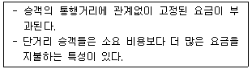
- 구역요금제
- 균일요금제
- 구간요금제
- 거리요금제
(정답률: 84%)
8. 단기교통계획에 비하여 장기교통계획의 특징으로 옳은 것은?
- 저자본비용
- 시설 지향적
- 다수의 대안
- 서비스 지향적
(정답률: 78%)
9. 어느 주차장의 평균 주차 시간은 2시간일 때, 한 대의 차량이 도착하여 주차시간이 1시간을 초과할 확률은?
- 약 30%
- 약 40%
- 약 50%
- 약 60%
(정답률: 48%)
10. 개별행태모형(Disggregate Behavioral Model)에 관한 설명이 옳은 것은?
- 모형의 구조는 결정적 모형이다.
- 다른 지역 단위에 적용하기가 곤란하다.
- 효용이론에 근거하여 구축되었다.
- 존별 집계자료를 이용하여 교통수요를 추정한다.
(정답률: 58%)
11. 지하철 요금과 승객 수요 간의 수요탄력성이 -1.5이다. 지하철 요금이 1200원으로 인상될 경우 승객 수요는 어떻게 변하는가? (단, 현재 지하철 요금은 1000원, 승객 수요는 10만명이다.)
- 8.5만명으로 감소한다.
- 8만명으로 감소한다.
- 7만명으로 감소한다.
- 6.5만명으로 감소한다.
(정답률: 68%)
12. ITS(Intelligent Transportation Systems)의 목적 및 개발배경으로 가장 거리가 먼 것은?
- 도로이용의 효율성 제고
- 도로의 교통안전 도모
- 저공해ㆍ무인운전차량 등 새로운 교통기술의 개발 및 보급
- 통행 발생량과 도탁량의 정확한 예측
(정답률: 66%)
13. 도로사업의 효율적 추진과 시행착오를 예방하기 위한 단계가 아닌 것은?
- 기본설계
- 실시설계
- 집행과 모니터링
- 타당성 조사
(정답률: 60%)
14. 도시ㆍ군계획시설의 교통시설 중 도로의 규모별 구분에서 주로 중로 2류의 폭원은?
- 15m 이상 20m 미만
- 20m 이상 25m 미만
- 25m 이상 30m 미만
- 30m 이상 35m 미만
(정답률: 47%)
15. 교통비율과 교통량의 관계를 나타내는 수요곡선이 아래와 같고, 기존 시설에 의한 교통비용이 C1, 교통량은 Q2일 때 소비자 잉여의 증가분은? (단, 보기의 빗금 친 부분이 소비자 잉여의 증가분이다.)
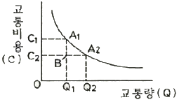
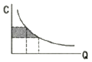
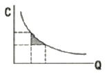
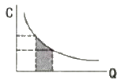
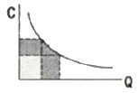
(정답률: 72%)
16. 다른 대중교통수간에 비하여 일반적으로 다음과 같은 특성을 갖는 것은?
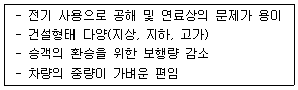
- 지하철
- 지트니
- 경전철
- 버스
(정답률: 81%)
17. 교통계획을 위한 현황자료 조사에서 인구, 소득, 자동차 보유대수 등 사회경제지표의 주요 용도와 가장 거리가 먼 것은?
- 교통투자사업의 재원확보 평가지표로 활용
- 통행조사에서 나타난 통행발생의 설명변수로 활용
- 가구면접 조사 표본을 분석 지구 전체에 대해 전수화시키는 경우의 총량지표로 활용
- 토지이용계획안의 수립, 인구와 고용기회를 분포시키는 기초자료로 활용
(정답률: 47%)
18. 경제성 분석기법 중 편익-비용비에 의한 방법의 특징으로 틀린 것은?
- 이해하기 쉽다.
- 할인율을 알지 못하는 경우 유용하다.
- 사업규모를 고려할 수 있다.
- 순편익의 크기가 고려되지 못한다.
(정답률: 64%)
19. 직장인 A가 하루 동안 발생시킨 목적통행 수는?
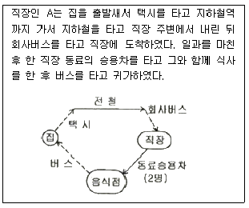
- 1
- 3
- 5
- 7
(정답률: 77%)
20. 광역철도의 요건으로 옳지 않은 것은?
- “대도시권 광역교통 관리에 관한 특별법“에서 정의하고 있다.
- 표정속도가 60km/h 이상인 철도를 말한다.
- 둘 이상의 시ㆍ도에 걸쳐 운행되는 도시철도 또는 철도다.
- 수도권은 전체 구간이 서울특별시청 또는 강남역을 중심으로 반지름 40km이내이어야 한다.
(정답률: 54%)
2과목: 교통공학
21. 다음 그림은 신호교차로에서 대기행렬모형을 나타낸 것이다. 대기행렬의 최대 길이를 나타낸 식으로 옳은 것은?
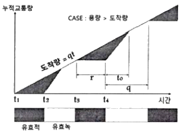
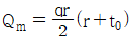
- Qm=q(r+t0)
- Qm=rt0
- Qm=qr
(정답률: 36%)
22. 연속교통류 시설의 이상적 조건 기준이 틀린 것은?
- 3.5m 이상의 차로폭
- 1.0 이상의 측방여유폭
- 다차로도로의 경우 평지 구간
- 2차도로의 경우 앞지르기 가능구간이 100%
(정답률: 50%)
23. 어느 신호교차로에서 보행자 횡단시간이 14초, 차량의 황색신호가 4초일 때 보행자 횡단 방향과 같은 방향의 차량의 최소녹색시간은? (단, 보행자 신호등이 있는 경우이며 횡단보행자가 주기 당 10명 이상이라고 가정한다.)
- 16초
- 17초
- 18초
- 19초
(정답률: 52%)
24. 이동차량조사법(Moving Vehicle Method)에서 각 도로 구간별로 조사하여야 하는 자료가 아닌 것은? (문제 복원 오류로 보기 1, 3번 내용이 정확하지 않습니다. 정확한 보기 내용을 아시는 분께서는 오류신고 또는 게시판에 작성 부탁드립니다.)
- test car를 추월하는 차량의 수(같은 방향)
- 다른 방향의 차량으로, test car와 만나는 차량의 수
- test car가 추월하는 차량의 수(같은 방향)
- test car와 같은 속도를 유지하며 뒤따르는 차(같은 방향)
(정답률: 68%)
25. 운전자가 실제로 느끼는 속도이며 속도규제 및 단속, 신호기 설치위치 선정, 신호시간계산, 사고 분석 등에 이용되는 속도는?
- 주행속도
- 자유속도
- 설계속도
- 지점속도
(정답률: 56%)
26. 어느 도로 구간의 교통량이 시간당 3000대, 평균 속도가 60km/h일 때 밀도는?
- 30대/km
- 40대/km
- 50대/km
- 60대/km
(정답률: 74%)
27. 단일 서비스 기관의 대기행렬모형(M/M/1)에서 평균 도착율이 λ, 평균 서비스율이 μ일 때 시스템 내에 차량이 한 대도 없을 확률은?
- μ-λ
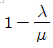
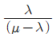
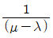
(정답률: 46%)
28. 어떤 교통류의 도착교통량을 15초 단위로 조사한 결과, 평균 1.87대, 분산 1.90이었다. 이 교통류의 차량 도착은 어떤 확률 분포를 갖는다고 볼 수 있는가?
- 포아송(Poisson)분포
- 이항(Binominal)분포
- 음이항(Negative Binominal)분포
- 다항(Multinomial)분포
(정답률: 64%)
29. 차량의 마찰계수에 영향을 주는 요소로 가장 거리가 먼 것은?
- 대기 온도
- 도로면 재질
- 타이어 접지 면적
- 운전자 반응시간
(정답률: 63%)
30. 반감응식(semi-actuated) 교통신호의 신호시간 설계 시 사용되는 요소로 가장 거리가 먼 것은?
- 주도로의 최대녹색시간
- 부도로의 초기녹색시간
- 부도로의 최대녹색시간
- 주도로의 황색신호시간
(정답률: 41%)
31. 교통류의 충격파에 대한 설명으로 틀린 것은?
- 유체역학적 원리에서 나온 개념이다.
- 저속차량에 의해 충격파가 발생할 수 있다.
- 충격파는 상류, 하류측으로 이동하거나 정지할 수 있다.
- 두 교통류 간에 발생하는 충격파의 속도는 교통류율 차이와 점유율 차이의 비율이다.
(정답률: 59%)
32. 서비스수준별 교통류의 상태에 대한 설명이 틀린 것은?
- A:사용자 개개인들은 교통류 내의 다른 사용자의 출현에 실질적으로 영향을 받지 않는다.
- C:교통류 내의 다른 차량과의 상호작용으로 인하여 통행에 상당한 영향을 받기 시작한다.
- E:교통량이 조금 증가하거나 작은 혼란이 발생하여도 와해 상태가 발생한다.
- FFF:과도한 교통수요로 혼잡이 심각한 상태이며 차량이 대상 구간의 전방 신호교차를 통과하는데 평균적으로 2주기 정도의 시간이 필요하다.
(정답률: 55%)
33. 감응식 신호에 대한 설명이 옳지 않은 것은?
- 정주기식 신호보다 주변 교차로와의 연동이 용이하다.
- 경우에 따라 도착 교통이 없는 현시는 생략될 수도 있다.
- 완전감응식과 반감응식이 있다.
- 일반적으로 교통량의 변동이 심한 독립교차로에서 사용하면 차량의 지체를 줄여주는 효과가 있다.
(정답률: 64%)
34. 30m의 도로구간을 2대의 차량이 통행한 시간이 각각 1초, 2초일 때 공간평균속도는?
- 14km/h
- 81km/h
- 72km/h
- 36km/h
(정답률: 54%)
35. 도시부 간선도로(신호교차로로 구성)의 시공도(time-space diagram)으로부터 일반적으로 확인할 수 없는 사항은?
- 옵셋(offset)
- 차량진행대폭(bandwidth)
- 차량통행시간(travel time)
- 개별 차량의 자유속도(free-flow speed)
(정답률: 63%)
36. 어느 고속도로의 계획년도 AADT는 48000대이고, 이를 계획서비스 수준(V/C) 0.7로 처리하기 위해 필요한 최소 차로수는? (단, K=0.15, D=0.6, 차로당 용량(C)=2200vph)
- 왕복 4차로
- 왕복 6차로
- 왕복 8차로
- 왕복 10차로
(정답률: 52%)
37. 제동거리에 대한 설명으로 틀린 것은?
- 비가 오는 날은 길어진다.
- 노면의 상태, 타이어의 상태와 관계가 있다.
- 노면의 스키드마크를 이용하여 구할 수 있다.
- 반응속도가 빠른 사람은 차량의 속도와 상관없이 제동거리가 평균보다 짧다.
(정답률: 78%)
38. 도로시설과 각 시설별 효과척도의 연결이 틀린 것은?
- 2차로도로-총지체율
- 신호교차로-평균제어지체
- 다차로도로-평균통행속도
- 고속도로 엇갈림 구간-주행속도
(정답률: 56%)
39. 고속도로 기본구간의 서비스 교통량 산정 시 고려하는 요소가 아닌 것은?
- 차로폭
- 중차량
- 측방여유폭
- 주변 가로의 개발상태
(정답률: 72%)
40. 교통량 조사방법 중 조사대상 지역을 가로지르는 기상적인 선과 모든 도로가 교차하는 지점에서 조사하는 방법은?
- 주행차량조사
- 스크린라인 조사
- 차량종류별 조사
- 방향별 교통량 조사
(정답률: 73%)
3과목: 교통시설
41. 평탄한 도로에서 80km/h로 주행하는 어느 차량의 최소정지시거는? (단, 마찰계수는 0.4, 종단경사는 3%, 인지반응시간은 2초이다.)
- 약 94m
- 약 104m
- 약 114m
- 약 124m
(정답률: 61%)
42. 다음 중 완화구간에 대한 설명으로 가장 옳은 것은?
- 편경사의 변화 또는 확폭량을 설치하기 위하여 취하게 되는 변이구간
- 학교 앞 등 보행자 교통이 많은 지역에서 주행속도를 조절하는 감속구간
- 엇갈림 구간에서 차량이 안전하게 교통류에 합류할 수 있도록 하기 위한 구간
- 고속도로의 오르막구간에서 화물차가 저속으로 이용 가능하도록 한 설계구간
(정답률: 53%)
43. 다음과 같은 (조건)인 도로의 설계속도는?
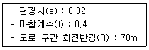
- 약 51km/h
- 약 61km/h
- 약 71km/h
- 약 81km/h
(정답률: 62%)
44. 평면곡선부가 원곡선만으로 구성된 경우(직선-원곡선-직선)에 관한 아래 설명에서 ()안에 들어갈 내용으로 옳은 것은?
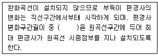
- 1/3
- 2/3
- 2/5
- 1/2
(정답률: 51%)
45. 포장의 종류에 따른 차로의 횡단경사 기준이 옳은 것은? (단, 평경사가 설치되는 구간은 고려하지 않는다.0
- 비포장:4.0% 이상 6.0% 이하
- 간이포장:3.0% 이상 5.0% 이하
- 시멘트콘크리트포장:1.5% 이상 2.0% 이하
- 아스팔트콘크리트포장:2.0% 이상 3.0% 이하
(정답률: 56%)
46. 다음 조건과 같은 보도의 최소 보도폭은?
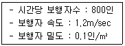
- 1.25m
- 1.50m
- 1.85m
- 2.00m
(정답률: 34%)
47. 아래와 같은 교통조건을 고려하여 도로를 건설하고자 할 때 필요한 일방향 차로수는?
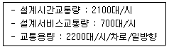
- 1차로
- 2차로
- 3차로
- 4차로
(정답률: 49%)
48. 설계속도가 얼마 이상인 도로의 평면곡선부에는 완화곡선을 설치하여야 하는가?
- 30km/h
- 40km/h
- 50km/h
- 60km/h
(정답률: 50%)
49. 다른 도로와의 연결에 의한 변속차로 설치에 대한 설명으로 옳지 않은 것은?(오류 신고가 접수된 문제입니다. 반드시 정답과 해설을 확인하시기 바랍니다.)
- 변속차로는 2.5m 이상의 폭으로 설치한다.
- 차량의 진입과 진출을 원활하게 유도할 수 있도록 노면표시를 하여야 한다.
- 성토 또는 절토부의 비탈면 경사는 접속되는 도로와 동일하거나 완만하게 설치한다.
- 테이퍼와 사업부지에 접하는 변속차로의 접속부는 최소곡선반경 15m 이상의 곡선반경으로 설치한다.
(정답률: 44%)
50. 시설한계 기준이 옳지 않은 것은?
- 자전거도로의 시설한계 높이는 3m 까지 축소가능하다.
- 소형차도로의 경우 시설한계 높이를 3m까지 축소 가능하다.
- 대형 자동차의 교통량이 현저히 적고, 그 도로의 부근에 대형자동차가 우회할 수 있는 도로가 있는 경우 3m까지 축소 가능하다.
- 집산도로의 경우 시설한계 높이를 4.2m까지 축소 가능하다.
(정답률: 36%)
51. 차도의 진행방향에 대하여 설계기준 자동차길이의 반 정도만 여유가 있으면 주차할 수 있고, 주차를 하는 자동차가 동시에 움직일 경우에는 각 자동차 간격을 줄일 수 있는 이점이 있는 주차방식은?
- 평행 주차방식
- 30° 주차방식
- 60° 주차방식
- 90° 주차방식
(정답률: 42%)
52. 방호울타리가 갖추어야 하는 조건으로 옳지 않은 것은?
- 차량을 감속시킬 수 있어야 한다.
- 차량이 튕겨 나가지 않아야 한다.
- 보행자의 횡단을 허용할 수 있어야 한다.
- 차량의 파손을 최소한으로 줄이도록 한다.
(정답률: 69%)
53. 도로의 기능을 크게 이동, 접근, 공간기능으로 분류할 때, 접근기능이 갖는 가장 큰 부수적 효과는?
- 방재도로
- 화재 확산방지
- 토지이용활성화
- 채광, 통풍을 위한 공간 확보
(정답률: 68%)
54. 예각교차로의 형상과 개선원칙에 대한 설명으로 옳지 않은 것은?
- 시거가 불량하여 사고 위험이 높아진다.
- 교차로의 개선은 통상 주도로의 선형을 조정한다.
- 정지선 간의 거리가 길고 교차로 면적이 넓어지기 쉽다.
- 자동차가 교차로 내부를 고속으로 통과하려는 현상이 발생된다.
(정답률: 47%)
55. 설계용량과 설계시간 교통량과의 관계에 대한 설명으로 옳은 것은?
- 설계용량은 설계시간 교통량과 관계없다.
- 설계용량은 설계시간 교통량과 항상 같다.
- 설계용량은 통상 설계시간 교통량보다 작다.
- 설계용량은 통상 설계시간 교통량보다 크다.
(정답률: 61%)
56. 감속차로의 형식 중 직접식인 경우 변이구간을 제외한 규정된 길이에 관한 설명으로 옳은 것은?
- 변이구간을 포함하여 분류단 노즈까지의 길이
- 변이구간을 포함하여 분류단 노면표시로 표시된 곳까지의 길이
- 변이구간 중 한 차로폭이 확보된 부분부터 분류단 노즈까지의 길이
- 변이구간 중 한 차로폭이 확보된 부분부터 분류단 노면표시로 표시된 곳까지의 길이
(정답률: 50%)
57. 설계속도가 시속 80킬로미터 이하인 도시지역 도로에 주정차대를 설치하는 경우 그 폭은 최소 얼마 이상이 되도록 하여야 하는가? (단, 소형자동차를 대상으로 하는 경우는 고려하지 않는다.)
- 2.5m
- 3.0m
- 3.5m
- 3.75m
(정답률: 42%)
58. 고속도로 비상주차대의 최소 설치 간격으로 옳은 것은?
- 250m
- 300m
- 500m
- 750m
(정답률: 67%)
59. 중앙분리대의 형식이나 구조를 선택할 때 고려사항이 아닌 것은?
- 경제성
- 신호등
- 설계속도
- 도로의 구분
(정답률: 49%)
60. 회전교차로 설치를 위한 여건을 고려할 때 설치가 부적절한 조건인 경우는?
- 회전차량 사고가 반발한 경우
- 오전, 오후 침두현상이 심한 경우
- 주도로에 편중된 좌회전 교통량이 있는 경우
- 총 진입 교통량이 하루 4만대를 초과하는 경우
(정답률: 50%)
4과목: 도시계획개론
61. 샤핀(F.S Chapin)이 주장한 토지 이용 결정 요인 분류에 해당하지 않는 것은?
- 정치적 요인
- 사회적 요인
- 경제적 요인
- 공공의 이익
(정답률: 62%)
62. 공동구의 설치 목적과 가장 거리가 먼 것은?
- 수자원의 보호
- 도시미관의 보호
- 방재능률의 향상
- 도로교통의 원활한 소통
(정답률: 57%)
63. 호이트(H. Hoyt)의 선형지대이론에 나타나지 않는 것은?
- 중심업무지구
- 주변업무지구
- 고급주택지구
- 점이지구
(정답률: 47%)
64. 도시의 인구가 처음에는 완만하게 증가하다가 일정 시점 이후에 급격하게 증가하다가 다시 완만하게 증가할 것으로 예상되는 지역의 인구예측에 적합한 모형은?
- 지수성장모형(Exponential Growth Model)
- 곰페르츠모형(Compertz Model)
- 집단생존모델(Cohort-survival Model)
- 선형모델(Linerar Model)
(정답률: 56%)
65. 그리스의 도시국가에 대한 설명으로 틀린 것은?
- 히포다무수는 격자형 도로망을 발전시켰다.
- 아테네는 가장 발달한 대표적인 도시국가였다.
- 시가지에 위치한 포럼은 종교적인 중심지가 되었다.
- 대부분의 도시민 주택은 폐쇄형으로 증정을 향해 배치되었다.
(정답률: 53%)
66. 용도지역별 개발행위허가 규모 기준이 틀린 것은?
- 관리지역:5만 m2 미만
- 도시지역의 생산녹지지역:1만m2미만
- 농림지역:3만m2미만
- 자연환경보전지역:5천m2미만
(정답률: 27%)
67. 시장ㆍ군수가 정비예정구역 또는 정비구역 해제를 요청하여야 하는 기준이 틀린 것은?
- 조합이 조합설립인가를 받은 날부터 3년이 되는 날까지 사업시행계획인가를 신청하지 아니하는 경우
- 토지등소유자가 정비구역으로 지정ㆍ고시된 날부터 2년이 되는 날까지 조합설립추진위원회의 승인을 신청하지 아니하는 경우
- 정비예정구역에 대하여 기본계획에서 정한 정비구역 지정 예정일부터 3년이 되는 날까지 시장ㆍ군수가 정비구역을 지정하지 아니하는 경우
- 토지등소유자가 시행하는 경우로서 토지등소유자가 정비구역으로 지정ㆍ고시된 날부터 3년이 되는 날까지 시업시행인가를 신청하지 아니하는 경우
(정답률: 25%)
68. 경관의 보전ㆍ관리 및 형성을 위하여 필요한 경우 지정하는 용도지구는?
- 미관지구
- 고도지구
- 경관지구
- 보존지구
(정답률: 62%)
69. 다음 중 학자별로 제안한 게획 도시의 내용이 잘못 연결된 것은?
- R.Taylor:위성도시
- Tony Garnier:상업도시
- E. Howard:전원도시
- S.Y. Mata:대상도시(linear city)
(정답률: 51%)
70. 광장의 종류별 구조 및 설치 기준에 대한 설명이 틀린 것은?
- 역전광장은 혼잡한 주요 도로의 교차지점에서 각종 차량과 보행자를 원활히 소통시키기 위하여 필요한 곳에 설치한다.
- 중심대광장은 다수인의 집회ㆍ행사ㆍ사교 등을 위하여 필요한 경우에 설치하고, 전체주민이 쉽게 이용할 수 있도록 교통중심지에 설치한다.
- 근린광장은 주민의 사교, 오락, 휴식 및 공동체 활성화 등을 위해 근린주거구역별로 설치한다.
- 경관광장은 주민이 쉽게 접근할 수 있도록 하기 위하여 도로와 연결시킨다.
(정답률: 43%)
71. 지구단위계획 수립시 지구단위계획구역의 지정 목적을 달성하기 위하여 포함시켜야 할 내용이 아닌 것은?
- 교통처리계획
- 가구ㆍ획지의 규모와 조성계획
- 건축물의 배치, 형태, 색채에 관한 계획
- 인구 배분에 관한 계획
(정답률: 49%)
72. 외국의 토지이용규제 수단들 중 대상지역에 대하여 일률로 용적률을 정하고 이를 초과하여 건설하려는 자는 그 초과분에 따른 과징금을 공공단체에 지불하여야 하는 제도는?
- 유도지역제(Incentive zoning)
- 개발권이양제(TDR)
- 법정밀도상한제(PLD)
- 우선도시화지구(ZUP)
(정답률: 65%)
73. 격자형 도로망에 대한 설명으로 옳은 것은?
- 교통의 흐름이 도심 집중형이다.
- 지형이 평탄한 도시에 적합하다.
- 도심의 기념비적인 건물을 중심으로 주변과 연결된다.
- 횡적인 연결은 환상선으로, 도심과 교외는 방사선으로 연결된다.
(정답률: 67%)
74. Perry가 주장한 근린주구(Neighborhood unit)에 대한 설명으로 틀린 것은?
- 근린주구의 반경은 약 400m 정도로 계획한다.
- 4면의 간선도로에 의해 구획된다.
- 중앙에는 중심 공원과 교차 도로를 배치한다.
- 주민에게 적절한 서비스를 제공하는 상업지구가 주거지 또는 교통의 결절점 부근에 설치되어야 한다.
(정답률: 47%)
75. 공업지역의 입지조건으로 옳은 것은?
- 경사도가 10% 이상인 지역
- 생산요소에 있어 충분한 용수, 전력 등의 공급이 가능한 지역
- 도시 내 간선교통시설과 연계되지 않는 지역
- 장래 시가화구역의 확장에 지장을 초래하는 지역
(정답률: 70%)
76. 도시ㆍ군계획시설로 분류하고 있는 도시공원의 유형에 해당하지 않는 것은?
- 운동공원
- 묘지공원
- 도시농업공원
- 어린이공원
(정답률: 43%)
77. 아디케스(Adickes)법에 의해 세계 최초로 환지방식에 의한 도시개발사업을 실시한 국가는?
- 프랑스
- 독일
- 오스트리아
- 스위스
(정답률: 58%)
78. 특별시장, 광역시장, 시장 또는 군수는 관할구역의 도시ㆍ군기본계획에 대하여 몇 년마다 그 타당성 여부를 전반적으로 재검토하여 정비하여야 하는가?
- 3년
- 5년
- 7년
- 10년
(정답률: 63%)
79. 도시ㆍ군계획시설로서 도로의 배치간격 기준이 틀린 것은?
- 주간선도로와 주간선도로:700m 내외
- 주간선도로와 보조간선도로:500m 내외
- 보조간선도로와 집산도로:250m 내외
- 국지도로 간: 가구의 짧은 변 사이의 배치간격은 90m 내지 150m 내외, 가구의 긴 변 사이의 배치간격은 25m 내지 60m 내외
(정답률: 61%)
80. 전국의 고용인구 중 서비스업에 종사하는 인구가 20%, A지역에서 서비스업에 종사하는 인구가 지역 인구의 10%라면 A지역 서비스업의 입지상 계수(Location Quotient)는?
- 0.3
- 0.4
- 0.5
- 0.6
(정답률: 55%)
5과목: 교통관계법규
81. 도시교통정비 촉진법에 따른 ‘교통시설’에 해당하는 것으로만 나열된 것은?
- 도로, 주차장, 철도
- 도로, 차고, 안전지대
- 주차장, 항만, 신호기
- 도로, 공항, 안전시설
(정답률: 60%)
82. 국가통합교통체계효율화법령에 따른 ‘교통시설’에 해당하지 않는 것은?
- 일반국도대체우회도로
- 국가지원지방도
- 국가기간복합환승센터
- 물류터미널 중 종합물류터미널
(정답률: 44%)
83. 도로교통법규상 교통안전 표지 중 어린이 보호표지는 어린이 보호지점 또는 구역의 어느 정도 전에 설치하도록 규정하고 있는가?
- 1km 이내
- 500m 이내
- 30m 내지 200m
- 50m 내지 200m
(정답률: 50%)
84. 도로법에서 규정한 도로의 종류와 등급에 해당하지 않는 것은?
- 특별시도
- 유료도로
- 지방도
- 시도
(정답률: 73%)
85. 교통행정기관이 운행기록장치 장착의무자 및 차량운전자로부터 제출받은 운행기록을 점검ㆍ분석하여 운행기록장치 장착의무자 및 차량운전자에 취할 수 없는 조치사항은?
- 허가ㆍ등록의 취소
- 교통수단안전점검의 실시
- 교통수단 및 교통수단운영체계의 개선 권고
- 최소휴게시간, 연속근무시간 및 속도제한장치 무단 해제 확인
(정답률: 51%)
86. 대중교통시설에 관한 사항을 반영하여야 하는 개발사업의 대상 및 범위 기준이 틀린 것은?
- “도시개발법”에 의한 도시개발 사업 중 “도시교통정비 촉진법”에 따른 교통영향평가 대상이 되는 사업
- “기업도시개발 특별법”에 의한 기업도시 개발사업 및 “신행정수도 후속대책을 위한 연기ㆍ공주지역 행정중심복합도시의 건설사업 중 부지면적 25만 제곱미터 이상인 사업
- 도로의 신설 또는 확장사업 중 편도 2차로 이상으로서 총길이 10킬로미터 이상인 사업
- “철도의 건설 및 철도시설 유지관리에 관한 법률”에 따른 철도건설사업 및 “도시철도법”에 의한 도시철도의 건설사업 중 철도역사 또는 도시철도역사가 포함되는 사업
(정답률: 33%)
87. 도로굴착에 관한 사항을 심의ㆍ조정하기 위하여 설치하는 도로관리심의회에 관한 설명으로 옳지 않은 것은?
- 고속국도와 일반국도에 대해서만 설치한다.
- 도로굴착공사의 시행에 따른 도로시설의 안전대책에 관한 사항을 심의ㆍ조정한다.
- 주요 지하매설물의 안전대책에 관한 사항을 심의ㆍ조정한다.
- 일반국도의 위원장은 지방국토관리철장이 된다.
(정답률: 55%)
88. 도로를 횡단하는 보행자나 통행하는 차마의 안전을 위하여 안전표지나 이와 비슷한 인공구조물로 표시한 도로의 부분을 무엇이라 하는가?
- 보도
- 안전지대
- 횡단보도
- 길가장자리구역
(정답률: 53%)
89. 주차장법령상 부설주차장의 설치 대상 시설물이 골프장인 경우 부설주차장의 설치 기준으로 옳은 것은?
- 시설면적 100m2당 1대
- 시설면적 150m2당 1대
- 1홀당 10대
- 1홀당 5대
(정답률: 54%)
90. 국가통합교통체계효율화법규상 타당성 평가 대행자가 타당성 평가서와 그 작성의 기초가 되는 자료를 보존하여야 하는 기준은?
- 해당 사업 또는 시설의 준공 후 5년
- 해당 사업 또는 시설의 준공 후 10년
- 해당 사업 또는 시설의 타당성 평가 후 5년
- 해당 사업 또는 시설의 타당성 평가 후 10년
(정답률: 40%)
91. 노상주파장의 구조ㆍ설비기준에 따라, 다음 중 노상주차장을 설치할 수 있는 지역 기준에 해당하는 것은? (단, 지방자치단체의 조례로 따로 정하거나 도로 교통에 크게 지장을 주는 경우 등 예외 조항을 적용하는 경우는 고려하지 않는다.)
- 주간선도로
- 너비 5m 도로
- 종단경사가 3%인 도로
- 고가도로
(정답률: 52%)
92. 국토교통부장관은 국가교통조사 및 공공기관의 장이 시행하는 개별교통조사의 중복을 방지하는 등 효율적인 교통조사의 시행과 조사 결과의 공동 활동 등을 위하여 몇 년 단위로 국가교통조사계획을 수립하여야 하는가?
- 1년
- 3년
- 5년
- 10년
(정답률: 60%)
93. 국토교통부장관이 ‘도시교통정비지역’으로 지정ㆍ고시할 수 있는 도시의 인구 기준은? (단, 도농복합형태의 시는 읍ㆍ면지역을 제외한 지역의 인구수를 기준으로 한다.)
- 30만명 이상
- 10만명 이상
- 5만명 이상
- 1만명 이상
(정답률: 63%)
94. 대도시권 광역교통 관리에 관한 특별법에 따른 광역교통계획 수립단위 기준이 모두 옳은 것은?
- 광역교통기본계획 10년, 광역교통시행계획 5년
- 광역교통기본계획 20년, 광역교통시행계획 10년
- 광역교통기본계획 10년, 광역교통시행계획 10년
- 광역교통기본계획 20년, 광역교통시행계획 5년
(정답률: 49%)
95. 장애인전용 주차인 경우의 주차단위 구획의 너비와 길이 기준이 모두 옳은 것은? (단, 평행주차형식 외의 경우이다.)
- 3.0m 이상, 5.0m 이상
- 3.0m 이상, 5.1m 이상
- 3.3m 이상, 5.0m 이상
- 3.3m 이상, 6.0m 이상
(정답률: 61%)
96. 도시교통정비 기본계획 수립 시 부문별 계획에 포함되어야 할 내용으로 가장 거리가 먼 것은?
- 교통시설의 개선
- 대중교통체계의 개선
- 환경친화적 교통체계의 구축
- 교통유발금의 부과 및 징수
(정답률: 64%)
97. 도로법상 도로관리청은 도로 구조의 파손 방지, 미관의 훼손 또는 교통에 대한 위험 방지를 위하여 필요한 경우 접도구열을 지정할 때, 소관 도로의 경계선으로부터 최대 얼마를 초과하지 아니하는 범위에서 지정할 수 있는가? (단, 고속국도의 경우는 고려하지 않는다.)
- 40m
- 30m
- 20m
- 10m
(정답률: 57%)
98. 교통안전법상 국가교통안전기본계획에 포함되어야 하는 사항으로 옳지 않은 것은?
- 대중교통체계의 운영 개선에 관한 계획
- 교통안전에 관한 중ㆍ장기 종합정책방향
- 교통안전지식의 보급 및 교통문화 향상목표
- 육상교통ㆍ해상교통ㆍ항공교통 등 부문별 교통사고의 발생현황과 원인의 분석
(정답률: 45%)
99. 긴급자동차의 지정을 받으려는 사람 또는 기관 등은 지정신청서와 첨부 서류를 누구에게 제출하여야 하는가?
- 행정안전부장관
- 시ㆍ도지사
- 지방경찰청장
- 군수
(정답률: 63%)
100. 대중교통의 육성 및 이용촉진에 관한 법률의 정의에 따른 ‘간선급행버스체계’의 구성요소에 해당하지 않는 것은?
- 버스운행관리시스템(BMS)
- 버스전용차로
- 저공해 저상버스
- 교차로에서의 버스우선통행
(정답률: 63%)
6과목: 교통안전
101. 평지의 교통사고 현장에서 측정한 차량 스키드마크의 길이가 15m, 타이어와 노면의 마찰계수가 0.8일 때, 차량의 제동 직전 주행 속도는?
- 약 50km/h
- 약 55km/h
- 약 60km/h
- 약 65km/h
(정답률: 61%)
102. 운전자의 정보처리과정(PIEV과정)으로 옳은 것은?
- 지각→행동판단→식별→반응
- 지각→식별→행동판단→반응
- 행동판단→지각→식별→반응
- 식별→행동판단→지각→반응
(정답률: 74%)
103. 우리나라 교통사고 사망은 사고 후 며칠 이내에 사망한 경우를 교통사고 사망자 통계로 처리하는가?
- 30일
- 14일
- 3일
- 1일
(정답률: 70%)
104. A, B, C지점에서 발생한 피해 등급별 사고건수가 아래와 같을 때, 이를 분석한 내용이 옳은 것은? (단, 피해 등급별 사고 심각도의 가중치는 사망사고 12, 중상사고 6, 경상사고 3, 대물사고 1이다.)
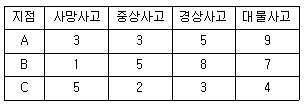
- 사고건수법 적용 시 A지점과 B지점은 동일한 위험도 순위를 가진다.
- 사고심각도법 적용 시 세 지점의 위험도는 C＞A＞B의 순서로 나타난다.
- 일반적으로 사고심각도법의 경우 대물사고 건수가 위험도 순위에 가장 큰 영향을 미친다.
- 피해 등급별 심각도 가중치는 모든 국가가 동일한 값을 적용한다.
(정답률: 65%)
1⑤. 차량이 급정지할 때 운전자의 핸들 조향에 의해 측반향으로 쏠리면서 도로 위에 미끄러져 요마크(Yawmark)를 형성하였다면, 차량이 미끄러질 때의 속도는? (단, 도로는 평지이고 타이어와 노면의 횡방향 마찰계수는 0.3, 요마크의 곡선반경이 100m이다.)
- 약 62km/h
- 약 72km/h
- 약 82km/h
- 약 92km/h
(정답률: 54%)
106. 교통사고 재현 시 교통사고 현장에서 조사해야 할 내용과 가장 거리가 먼 것은?
- 속도
- 방어적인 조치
- 운전자의 학력
- 도로상에서의 위치
(정답률: 77%)
107. 교통사고 현장에서 발견되는 타이어 자국(Tire mark)중 제동에 의해 타이어가 노면 위에 종방향으로 미끄러지면서 타이어와 노면의 마찰에 의하여 만들어지는 흔적은?
- 스키드마크
- 요마크
- 스커프마크
- 플랫타이어마크
(정답률: 66%)
108. 교통안전개선사업의 사전ㆍ사후 분석기간을 선정할 때 고려해야 할 사항이 아닌 것은?
- 개선된 지점의 사전ㆍ사후 분석기간은 대조지점(control site)과 동일해야 한다.
- 분석기간은 가급적 짧을수록 정확한 분석을 시행할 수 있다.
- 분석기간은 적절한 양의 사고 자료를 제공할 수 있을 만큼 충분히 길어야 한다.
- 교통안전개선사업을 위한 공사가 진행되고 있는 동안은 분석기간에서 제외해야 한다.
(정답률: 68%)
109. 교차로에서의 사고율에 대한 일반적인 설명으로 가장 적합한 것은?
- 일반적으로 4지교차로가 3지교차로보다 사고율이 낮다.
- 교차로의 교통통제방법은 교통사고에 영향을 미친다.
- 사고율은 교차로의 교통량에 전혀 영향을 받지 않는다.
- 우회전 교통량보다 좌회전 교통량이 많을수록 사고율이 높아진다.
(정답률: 56%)
110. 운전자의 Reaction time(반응시간)을 줄일 수 있는 방법이 아닌 것은?
- Encourage familarity.(친숙함을 강화한다.)
- Use symboilc signs.(상징적인 신호를 사용한다.)
- Provide positive information.(올바른 정보를 제공한다.)
- Max the unmber Of alternative.(대안의 수를 최대화한다.)
(정답률: 67%)
111. 다음과 같은 특징을 갖는 위험도 분석방법은?
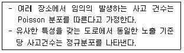
- 사고율법
- 사고건수법
- 사고건수-사고율법
- 사고율-통계적방법
(정답률: 47%)
112. 도로의 환경이 ‘안전한 도로’가 될 수 있도록 설계ㆍ관리되어야 하는 사항이 아닌 것은?
- 기준 이하의 상태를 운전자에게 경고한다.
- 운전자의 잘못된 행태를 포용하지 않는다.
- 비정상적인 구간에서는 운전자를 유도한다.
- 운전자의 상층 지점 통과를 통제한다.
(정답률: 53%)
113. 교통사고를 유발하는 도로구조요인에 해당하지 않는 것은?
- 도로의 선형
- 도로의 노폭
- 노로의 노면상태
- 노로의 운행차량구성
(정답률: 64%)
114. OECD가 요약한 교통안전의 진보단계 중 “모든 사고에 있어 특정 사건은 부분적으로 그에 앞선 행동 또는 환경의 결과다”라는 전제 하에 도로 외상을 유발하는 과정을 통하여 결정적인 선 또는 경로를 찾는 방법을 개발하고자 한 것은?
- 다원인 동적 체계접근
- 다원인 정적 체계접근
- 다원인 기회현상 접근
- 단일원인 사고경향 접근
(정답률: 64%)
115. 교통사고원인을 분석하면서 교통사고는 충돌 전, 충돌 중, 충돌 후의 세 가지 사고기회의 궤도를 돌파하여야 비로소 사고로 연결된다고 주장한 사람은?
- Reason
- Rumar
- Hauer
- Haddon
(정답률: 41%)
116. 미끄럼흔적으로부터 미끄럼거리를 추정하는 기준으로 옳지 않은 것은?
- 곡선미끄럼의 경우 미끄럼흔적들이 평균값을 미끄럼거리로 한다.
- 직선미끄럼의 경우 모든 바퀴들의 미끄럼흔적 중 가장 짧은 것을 미끄럼거리로 한다.
- 양후륜의 미끄럼흔적들이 전륜의 미끄럼흔적의 어느 한 쪽을 벗어나면 곡선미끄럼으로 간주한다.
- 양후륜의 미끄럼 흔적들 모두가 전륜의 미끄럼흔적을 벗어나지 않으면 직선미끄럼으로 간주한다.
(정답률: 73%)
117. 도로안전시설 중 시선유도표지의 기능이나 설치장소 등에 대한 내용으로 틀린 것은?
- 시선유도표지는 설계속도가 60km/h 이상인 구간에 설치
- 시선유도표지는 도로선형이 급변하는 구간에 설치
- 시선유도표지는 차로 수나 차도 폭이 변화하는 구간에 설치
- 자동차전용도로 및 주간선도로 등에는 원칙적으로 전체 구간에 연속적으로 설치
(정답률: 48%)
118. 시거불량에 의한 교통사고 예방대책으로 가장 거리가 먼 것은?
- 장애물 제거
- 예고표지 설치
- 시선유도표지 설치
- 접근로 테이퍼 설치
(정답률: 59%)
119. 다음 중 교통사고 발생 자체를 가장 능동적으로 억제시키는 조치 내용은?
- 비신호 교차로에 점멸등 설치
- 위험 지역에 가드 레일(Guard Rail)설치
- 충격흡수시설 설치
- 운전자용 에어 백 설치
(정답률: 64%)
120. 보행자의 안전한 도로 횡단을 위한 시설인 횡단보도의 설치에 관한 원칙이 아닌 것은?
- 운전자가 식별하기 쉬운 위치에 설치한다.
- 보행자의 횡단거리를 최소화 할 수 있는 위치에 선정한다.
- 횡단보도는 항상 차로와 직각으로 설치하여야 한다.
- 횡단보도의 폭은 보행자 교통량, 신호시간 등을 고려하되 최소치를 4.0m로 한다.
(정답률: 58%)